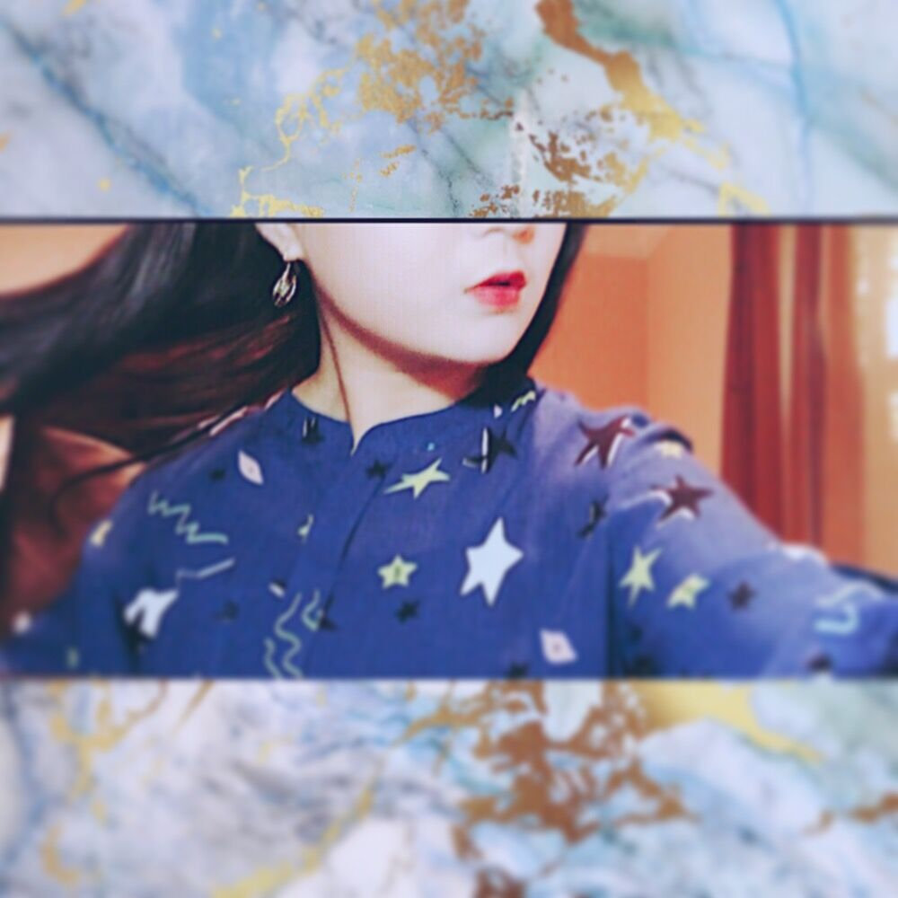

Hi, nice to meet you, my name is Siyang Lu.
I’m a student who is studying at City College of San Francisco. My major is Visual Media Design, so that is the reason which I decided to take this class. I love to create things. Whether it is articles, photography, post-production, or just some simple video editing, I always have enough patience to learn, and to make that knowledge into my brain. So far, I have mastered more versatile knowledge through this class. I guess it is the right time to see my works, please go back to the top and visits them.
Well then, See you there! :)